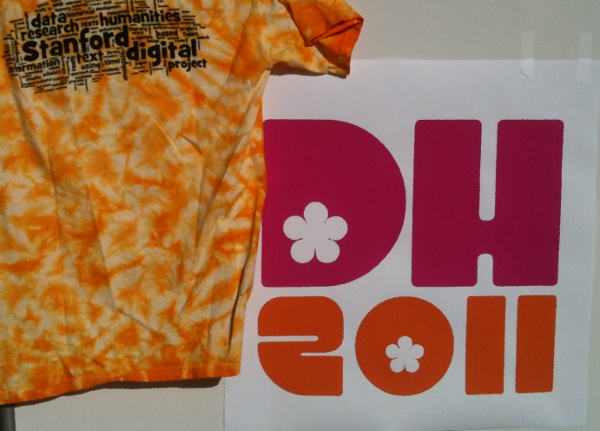

It’s the first pre-conference workshop day for this year’s Digital Humanities conference. I’ll be taking part in the Visualizing Literary History workshop and vigorously protesting the orientalization of California and Californians as depicted by the conference attire, logo, internet password, feeds, &c &c.


California has many model citizens, as well as a vibrant thespian tradition.
I mean, come on, we’re also the home of Yosemite, the Los Angeles Raiders and Bullitt.